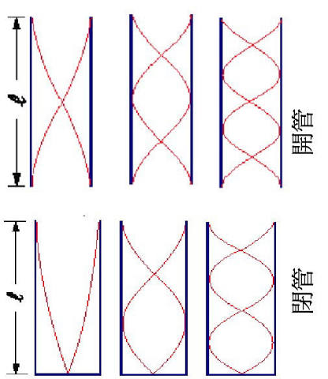

探
本節探究 同一首歌，為什麼樂器不同就「聽起來不一樣」？
重點概覽：樂音三要素 ｜ 噪音
鋼琴和小提琴拉同一個音，仍聽得出差別；工地聲音讓人不舒服。先配對預測：音調↔？ 響度↔？ 音色↔？下面兩站把聽覺拆成可檢驗的波動量。
探究問題：同一首歌，樂器不同為什麼聽起來不一樣？
重點概覽：樂音三要素 ｜ 噪音
鋼琴和小提琴拉同一個音，仍聽得出差別；工地聲音讓人不舒服。先配對預測：音調↔？ 響度↔？ 音色↔？下面兩站把聽覺拆成可檢驗的波動量。
音調、響度、音色 ｜ 頻率與音調
探究線索：只把弦繃緊、不改撥弦力道，比較可能改變音調還是響度？用頻率與振幅分開想。
樂音：通常指物體 振動所產生、聽來悅耳的聲音。
樂音三要素： 、 、 。
| 分類 | 管樂器 | 弦樂器 | 打擊樂器 |
|---|---|---|---|
| 發聲原理 | 吹氣使物體振動發聲 | 撥、拉弦使弦振動發聲 | 敲擊膜、木或金屬使物體振動發聲 |
| 舉例 | 笛、小號、法國號 | 吉他、豎琴、小提琴 | 三角鐵、鐵琴、鼓、鈸 |
聲音的高低稱為 。 音調由振動快慢（ ）決定，單位為 （Hz）。
振動頻率愈高，音調愈 。
| 音名 | 中央 C | D | E | F | G | A | B | 高音 C |
|---|---|---|---|---|---|---|---|---|
| 唱名 | Do | Re | Mi | Fa | Sol | La | Si | Do |
| 頻率（Hz） | 262 | 294 | 330 | 349 | 392 | 440 | 494 | 524 |
弦樂器：弦愈細、愈短、愈緊，音調愈高
管樂器：管子愈短，氣柱愈短，吹奏音調愈高
甲、乙為相同玻璃管。甲水位較低（氣柱較長），乙水位較高（氣柱較短）。
由管口吹氣：振動的是 。 甲音調較 ， 乙音調較 。
用槌敲擊：振動的是 與管。甲水柱較短，音調較 ； 乙水柱較長，音調較 。

藍線＝管壁；紅線＝位移駐波包絡（交會處為波節，最寬處為波腹）。開管 \(L=\dfrac{\lambda}{2},\lambda,\dfrac{3}{2}\lambda\)；閉管 \(L=\dfrac{\lambda}{4},\dfrac{3}{4}\lambda,\dfrac{5}{4}\lambda\)。
這一站的證據：音調看頻率、響度看振幅、音色看波形。下一站把「難聽」也變成可觀察的量：噪音與分貝。
固有頻率相同才會共振
當一物體振動時，另一個 相同的物體也跟著振動，稱為共振（共鳴）。
結論：兩物體頻率相同才會共振。
波源靠近：波長變短、頻率變高；遠離則相反
1. 四支音叉：甲 100 Hz、乙 120 Hz、丙 100 Hz、丁 240 Hz。敲甲時會共振的是 。
2. 下列四種聲波圖形，哪兩個可以產生共振？（週期／頻率相同者）
答案： （波形疏密相同，頻率相同）
音叉頻率：甲 90、乙 100、丙 170、丁 90、戊 130、己 100（單位 Hz）
3. 敲甲時，哪一支會跟著振動？ （同為 90 Hz）
4. 敲乙後用手按住乙，另一支正在振動的音叉會 。
5. 把共鳴箱開口轉向外側，共振效果會 。
定義、分貝、防制
探究線索：分貝數字變大 10，聽起來大約是「大聲一點」還是「能量差很多」？噪音防制要從源頭、路徑還是接收端想？
令人感覺不適的聲音稱為 。 來源例如：汽機車引擎、喇叭、營建工程、大聲集會。
1. ( ) 噪音對於人體的心理和生理都會造成影響。
2. (
) 分貝超過噪音管制法規定的聲音，才稱為噪音。
訂正：
1. 令人感覺不適的聲音稱為 。
2. 噪音的聲音強度單位為 。
3. 長期下來，下列何者較不會對生理及心理產生不良影響？ （A）大型造勢晚會的加油聲 （B）鄉村的蟲鳴聲 （C）抗議活動的汽笛聲 （D）婚喪喜慶的鞭炮聲 →
4. 噪音會干擾生活，下列何者並非噪音所造成？ （A）影響學習 （B）干擾談話 （C）降低工作效率 （D）改善聽力 →
5. 具備下列何種性質的聲音最可能成為噪音？ （A）音調高 （B）響度大 （C）聲速快 （D）音色美 →
這一站的證據：噪音波形不規則；防制可從音源、路徑、接收端想。收成速記後，就能回答本節問題。
依本節課本重點整理
證據卡：這些句子用來支撐下面的「本節主張」。先對照三要素與分貝，再決定你同不同意。
| 觀念 | 記住這句 |
|---|---|
| 樂音三要素 | 音調、響度、音色 |
| 音調 | 由頻率決定；頻率愈高音調愈高 |
| 易高音 | 輕、細、短、小、緊；弦短、氣柱短 |
| 吹管／敲管 | 吹：振氣柱（氣柱長→音調低）；敲：振水柱（水柱長→音調低） |
| 共振 | 固有頻率相同才會；共鳴箱開口相對效果較好 |
| 噪音 | 令人不適的聲音；強度單位分貝 |
| 隔音窗 | 雙層玻璃中間真空 |
把「好聽／難聽」變成可觀察的波動量
樂音三要素：音調看頻率，響度看振幅，音色看波形。噪音波形不規則，常用分貝描述音量大小。防制噪音可從減少音源、阻隔傳播、保護耳朵三方面著手。
第 3 章問完「波傳什麼、聲音怎麼走」。下一章換成光：光是彎著走，還是直直走？ 先用下面練習檢驗你的主張。
基本題 5 題 ＋ 進階題 5 題
檢驗主張：做題時對照本節問題——音調、響度、音色各對應波動的哪個量？
1. 樂音三要素是音調、響度、 。
2. 音調由 決定，頻率愈高音調愈高。
3. 弦愈短，音調愈 。
4. 共振發生的條件是兩物體 。
5. 令人感覺不適的聲音稱為 。
1. 吹管口：氣柱愈長音調愈 ； 敲管子：水柱愈長音調愈 。
2. 高音 Do（524 Hz）約為中央 C（262 Hz）的 倍，音調升高約一個八度。
3. 同一音調、不同樂器聽起來不一樣，主要差在 （泛音組合不同）。
4. 最可能成為噪音的是 ，不是音調高或聲速快。
5. 隔音窗常用雙層玻璃，中間為 ，因為真空不能傳聲。